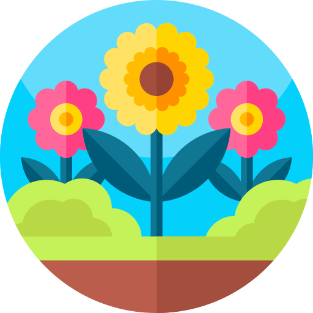
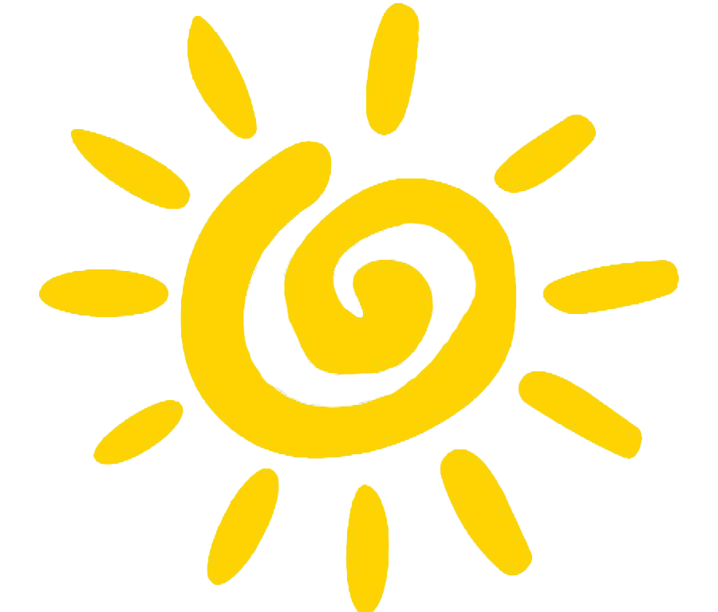
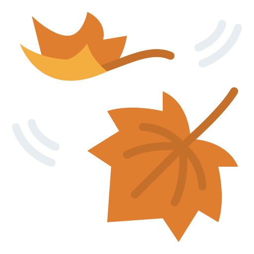

Upptäck Sveriges vackra natur
Din guide till vandringsleder, överlevnadstips och naturupplevelser
Utforska lederPopulära vandringsleder
Säsongstips

Vår
Förbered dig på fuktiga leder och varierande temperatur. Ta med lager på lager-kläder och vattentäta skor.

Sommar
Skydda dig mot solen och insekter. Packa gott om vatten och lätta kläder med UV-skydd.

Höst
Njut av höstfärgerna men var beredd på kyliga morgnar. Ta med regnkläder och extra lager.
Vinter
Var förberedd på snö och is. Använd snöskor eller skidor, och packa termos med varm dryck.